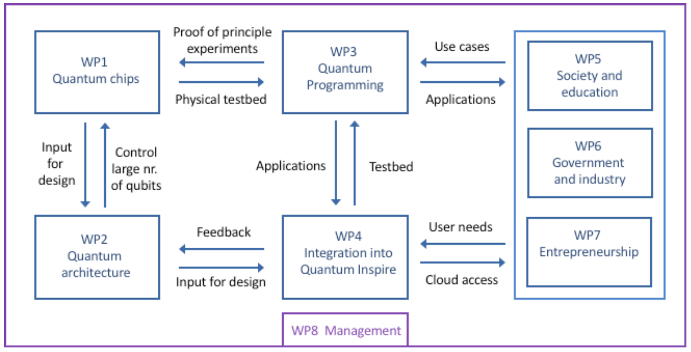

The Program
"The design of the Quantum Inspire interface is repeatedly adapted to incorporate the findings from stakeholders (WP5-7) and industrial design researchers, who investigate intuitive mental models of quantum bits and computers."
WP4.4 Mandate
"WP4.4 requires fundamental research on mental models for quantum computing concepts which will guide the UX/UI design."
"Deploy qualitative methods to create a common language (and shared mental models) acceptable to both experts and non-experts ... technology probes, research-through-design, experience prototyping, storytelling and co-creation."
Promised Deliverables
- "PhD thesis (month 48)" + "3 scientific publications (month 18, 30, 42)"
- "Updated user experience and interface of quantum-inspire.com (month 6, month 36)"
- "Data ... available through public repositories such as 4TU or Zenodo"
Three Lines of Work
1. PhD Thesis
Quantum Computational Thinking — framework, metaphors, and prototype for computing-focused QC education2. MSc Graduation
D'Arcangelis (2024) — "How Might ChatGPT Improve the Accessibility of Quantum Computing?"Supervised with Deborah Nas
3. Haiqu: AI Agent
AI-mediated quantum computing — replication study + benchmark + interactive platform"Translate fundamental research in quantum physics and design to concrete outcomes for society via an accessible interface for quantum computers."
Quantum Computational Thinking
If educators frame QC bottom-up from physics, can we invert it — teaching QC top-down from computational thinking?
7 Key QC Concepts
Identified via co-creation with QC educators:
| Concept | Complexity |
|---|---|
| Superposition | Low |
| Entanglement | Low |
| Probability | Low |
| Measurement | Medium |
| Qubits | Medium |
| Gate operations | High |
| Algorithms | High |
5 Computational Thinking Dimensions
Algorithmic thinking — decomposing, iterating, planning
Data — types, values, transforming
Logic — deducing, extrapolating, predicting
Problem-solving — adjusting, judging
Metaphor Research
What Educators Use Today
39 metaphors collected via Systematic Metaphor Analysis:
| Concept | Prevalent model |
|---|---|
| Algorithms | Incremental construction |
| Entanglement | Paired objects |
| Qubits | A polar object |
| Superposition | Expansion of resources |
What We Designed
New metaphors emphasising computational roles + unified source domain:
| Concept | New metaphor |
|---|---|
| Qubits | Coloured cells in a grid |
| Gates | Formatting cells |
| Superposition | Colour gradient on a cell |
| Entanglement | Opacity of adjacent cells |
| Measurement | Setting colour to a point |
| Probability | Manipulating colour in a gradient |
| Algorithms | Refining a route |
Design Iterations
From concept to functional prototype through iterative research-through-design:

Early concept sketches, physical prototyping, and digital interface exploration
Prototype — "Guess a Cell"
Learner navigates rounds of "find the most red cell" — scores improve, landscape reveals
Controls, selection field,
1200-cell grid, mask layer
Evaluation Results
Study Design
- 10 participants with computing background, no QC knowledge
- Think-aloud protocol
- Deductive coding against QCT framework
CT Dimension Breakdown
Problem-solving 18% • Logic 14%
CT dimension percentages per participant (Table 7.7)
haiqu.org — AI Meets Quantum Hardware
haiqu.org is the interface between people and quantum computers — ask a question in plain language, get results from real hardware.


Interactive dashboard — experiments, results, visualisations.
All built by AI agents through natural language.
MSc: Can ChatGPT Make QC Accessible?
C. D'Arcangelis (2024, supervised with Deborah Nas)
Research Question
How might ChatGPT improve the accessibility of quantum computing?
Findings
- ChatGPT as effective intermediary for democratising QC access
- Benefits at all skill levels: beginners do creative coding, programmers gain QM insight, experts gain efficiency
- Created "Quantum Buddy 2.0" — custom GPT refined for non-experts
- Non-experts solved encryption problems with no QM background

AI as the interface between humans and quantum hardware
Haiqu: How Good Is AI at Quantum?
Qiskit HumanEval (IBM, 2024)
151 quantum programming tasks. LLMs achieve 62–71% zero-shot, 79.5% with retrieval augmentation.
Our Replication Study
Go beyond code generation: can an AI agent replicate published experiments on real hardware, end-to-end?

AI Agent Results
"Make real qubits available to users in society ... such that those users can experience quantum computing first hand."
asks questions
builds circuits, runs jobs
Tuna-9 • Garnet • Torino
Deliverables Scorecard
| Grant promise | Status | Delivered |
|---|---|---|
| "PhD thesis (month 48)" | DONE | QCT thesis — 6 RQs, framework, metaphors, prototype (PhD) |
| "3 scientific publications" | DONE | Thesis chapters (PhD) + AI replication paper (2026) |
| "Fundamental research on mental models" | DONE | QCT framework + 39 metaphors collected + 7 designed (PhD); MSc thesis |
| "Technology probes ... co-creation" | DONE | Educator interviews + prototype eval (n=10) (PhD); Quantum Buddy (MSc) |
| "Updated UX and interface" | DONE | AI agent interface + interactive dashboard (haiqu.org) |
| "Data ... through public repositories" | DONE | PhD data online (PhD); open-source repo, 98 result files, 230K+ shots |
| "Interfacing to stakeholders" (WP5-7) | ONGOING | AI agent approach opens new pathways |
What Remains
Open Questions
- Does AI abstraction enable learning or obscure understanding?
- Can QCT metaphors be woven into AI explanations?
- If AI can do replication science, can experts + AI do greenfield science?
Where We Need Your Help
- Evaluation partners: test haiqu.org with your students, researchers, or stakeholders
- Domain collaboration: bring your experiments to the AI agent — what can it replicate for you?
- WP5-7 integration: connect the AI interface to real stakeholder needs and use cases